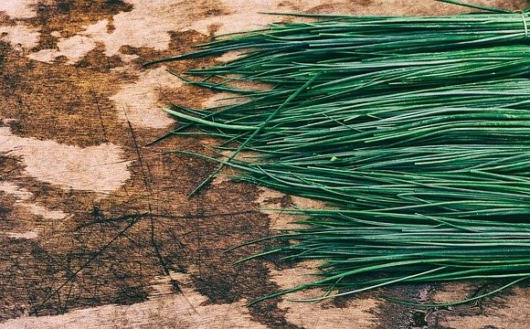

Chives
Overview
- Allium schoenoprasum
- hollow tubular green leaves in clusters from a small, slender bulb
- clusters of a few dozen star-shaped flowers, usually pale purple in color
- relatively small, up to 50cm tall
- native to both the Old and New World*
- rhizomal, planted in the autumn and harvested early winter
Onion chives are the Allium herb, typically used as a garnish rather than as a vegetable. Due to its massive native range, it is much more prominent than its relatives in cuisines of all cultures. In the past millenium, chives have had religious and even medicinal uses. Chives are commonly used finely chopped and mixed in seasonings, sauces, and garnishing blends. Flavor-wise they are relatively similar to scallions, if somewhat milder.
Less commonly consumed parts of the chive plant are the chive flowers, which can also be cooked whole in salads or brewed as a tea. It is also worth mentioning that garlic chives, native to the Shanxi province in China and much more prominent in Chinese cuisine, are similar in appearance to onion chives but have a more pungent taste. As an herb, garlic chives, onion chives, and scallions can mostly be used interchangeably.
*Unlike other Allium, chives are unique in that they arrived the New World well before the arrival of humans. Due to this fact, chives are commonly found in the wild in both the Americas and Eurasia.